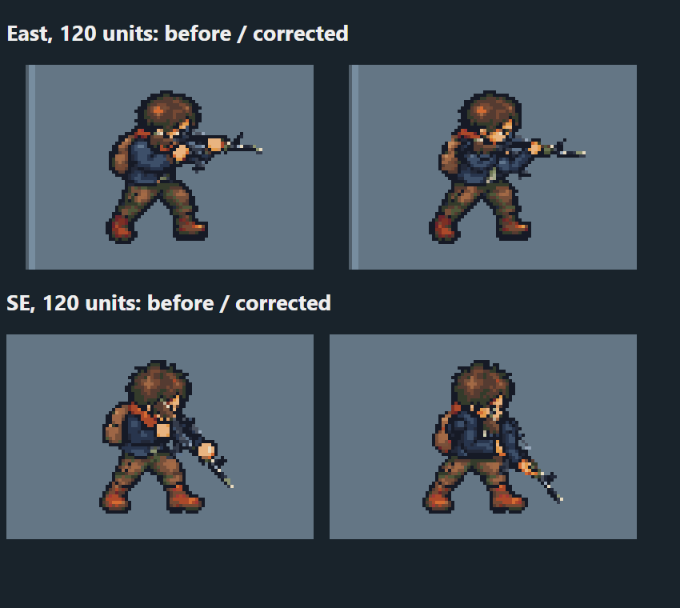

The old East and SE arms are replaced in Aim, Fire and moving_rifle through import5. Actual source parts and the separate rifle use the existing renderer; original head and per-frame legs remain. SE reuses the authored SW parts with an explicit whole-part mirror and reflected grip.

Rows:80,120,240 units. Paired columns:0,30,45,60 ground degrees;H standing,M moving. Captures share the packaged bank and weapon geometry and keep the locomotion frame clock.
This replaces the returned right-facing construction. Continuous full-circle grip, other directions/actions and independent anatomy acceptance remain open. A socket/raster pass does not approve those gates.
Fresh technical report · 10 real raster/consumer regression cases · Source/package/evidence hashes · Matching game executable